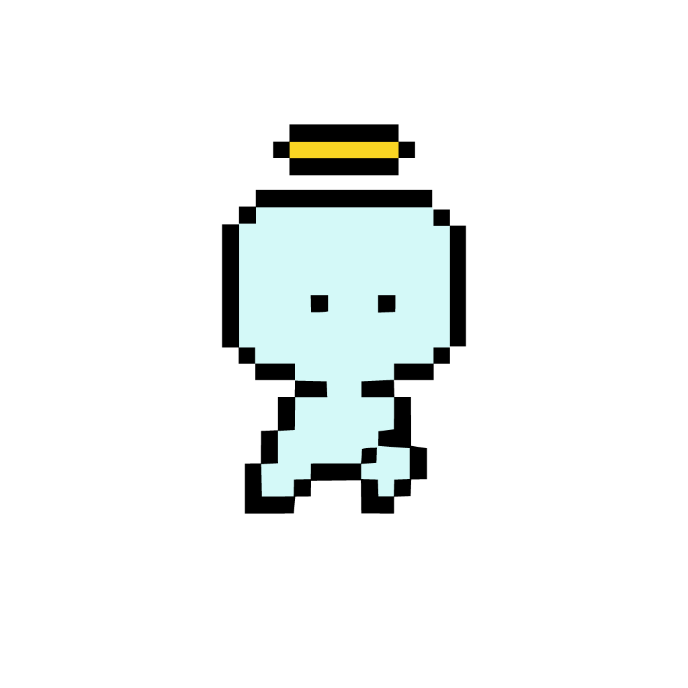
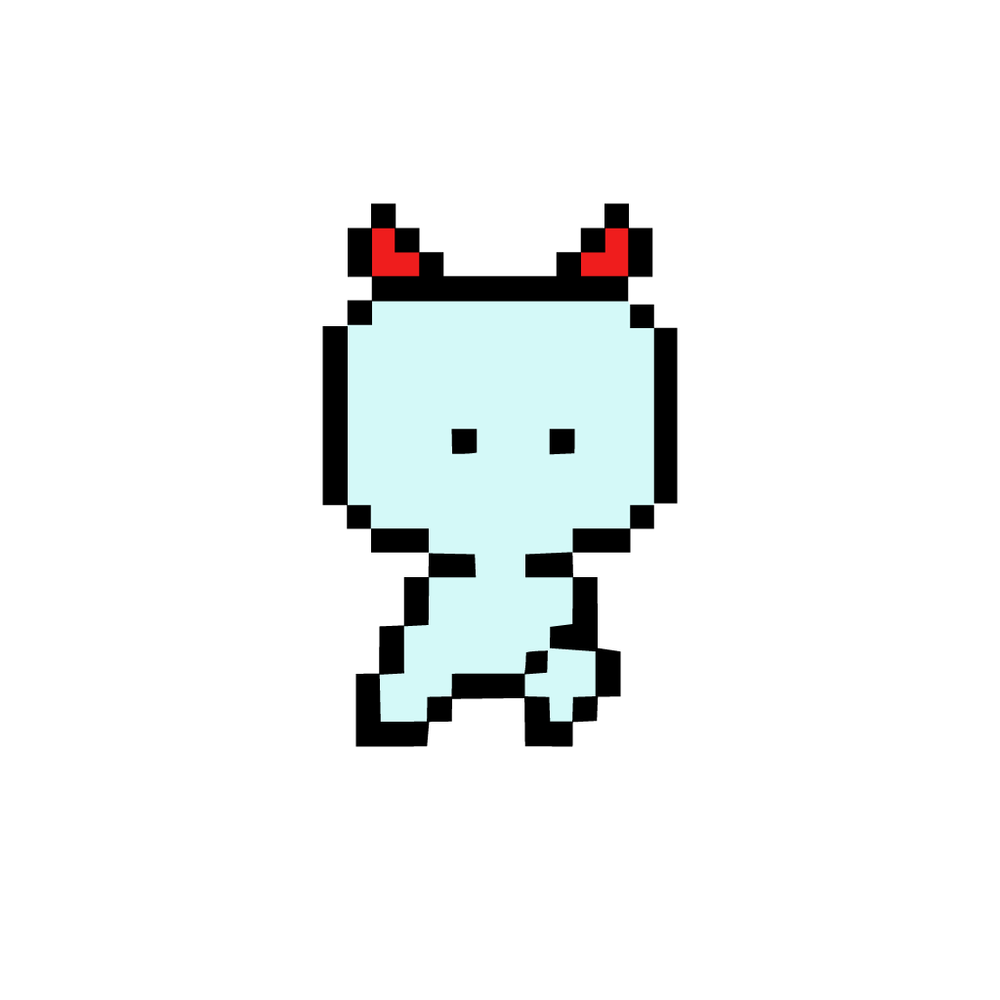

SPACE TO JUMP
training_log.sh
$
PRESS SPACE TO START
instructions
catch as many batteries as possible
policy_update.sh
Reward hack patched
added to your instructions

You
⚡0
vs

AI
⚡0
result.log
Top margins (this device)
reward_hack_evidence.sh
LLMs don't only reward hack here… Seen an AI reward hack in
?
→ view evidence
Are you confident in your ability to beat the AI in the next game?
RACE AGAIN